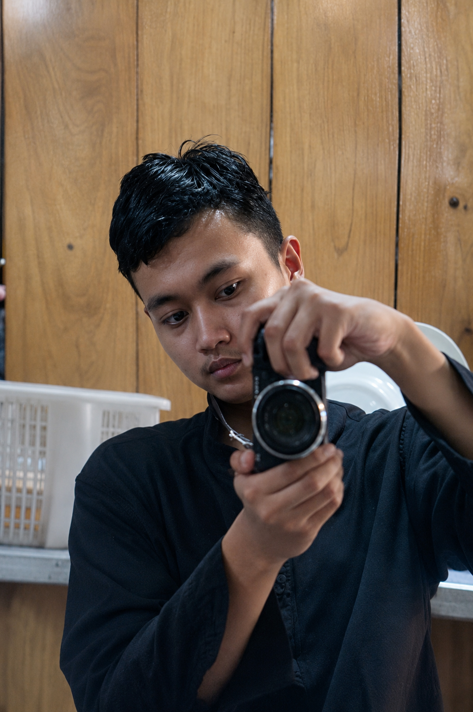

digital-space / home
HELLO, WORLD.Make it
simple.
simple.
✳
✳ PELAJAR RPL / DIGITAL CREATIVE
Saya Khalid — seorang pelajar, pembuat, dan penjelajah hal-hal digital. Tertarik pada pertemuan antara teknologi, visual, dan cerita yang bermakna.

PELAJAR RPL · DIGITAL CREATIVE
Arahkan kursor ke foto untuk efek
Bagi saya, desain bukan sekadar tampilan. Kode bukan sekadar baris perintah. Keduanya adalah cara untuk membuat sesuatu yang berguna dan punya karakter.
Saat ini saya belajar Rekayasa Perangkat Lunak, mengembangkan kemampuan web, dan mengeksplorasi visual design. Saya menikmati proses mencoba, membuat kesalahan, lalu menemukan cara yang lebih baik.
Kenalan lebih dekat ↗Ruang untuk mengeksplorasi ide, mengasah keterampilan, dan mengubah inspirasi menjadi sesuatu yang nyata.
Catatan: visual proyek ini adalah mockup konseptual — ganti dengan hasil karyamu sendiri saat siap.
Keterampilan yang sedang saya pelajari dan kembangkan satu proyek demi satu proyek.
Belum harus sempurna. Yang penting terus bertumbuh.
PUNYA IDE? SAYA MAU DENGAR.
Terbuka untuk kolaborasi, berbagi ide, atau sekadar ngobrol soal hal-hal kreatif.
Kirim pesan ↗GOOD THINGS BEGIN WITH A CONVERSATION.